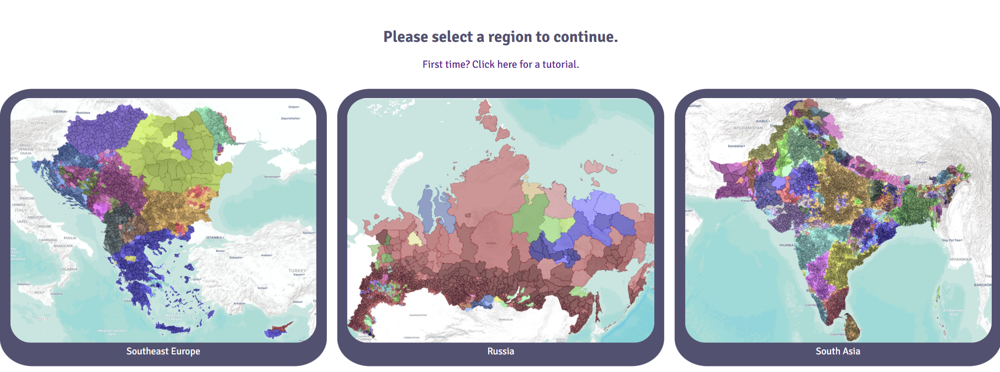
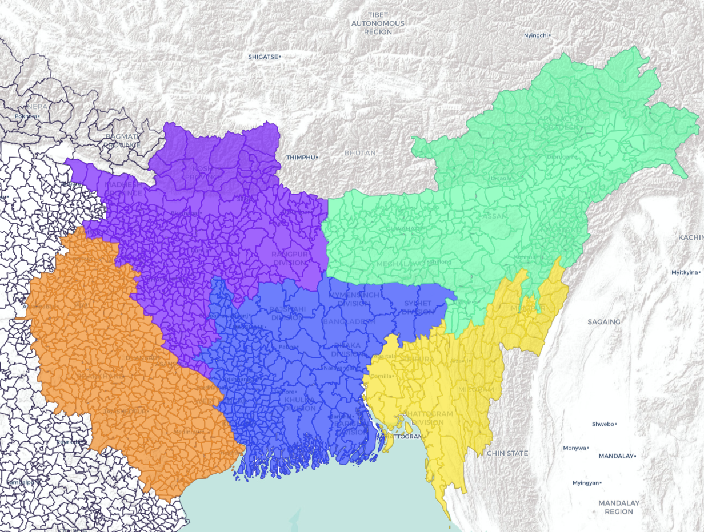
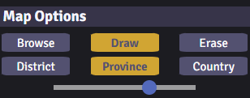
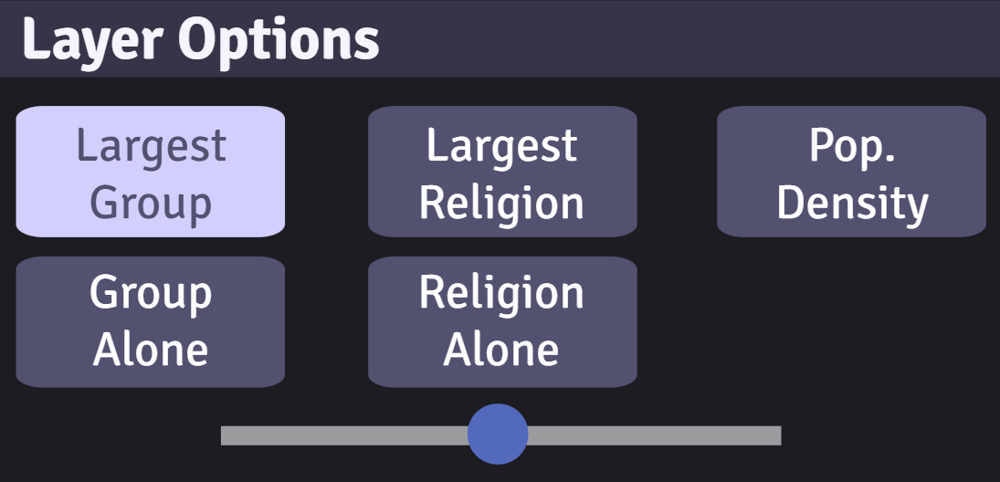
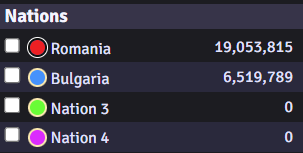
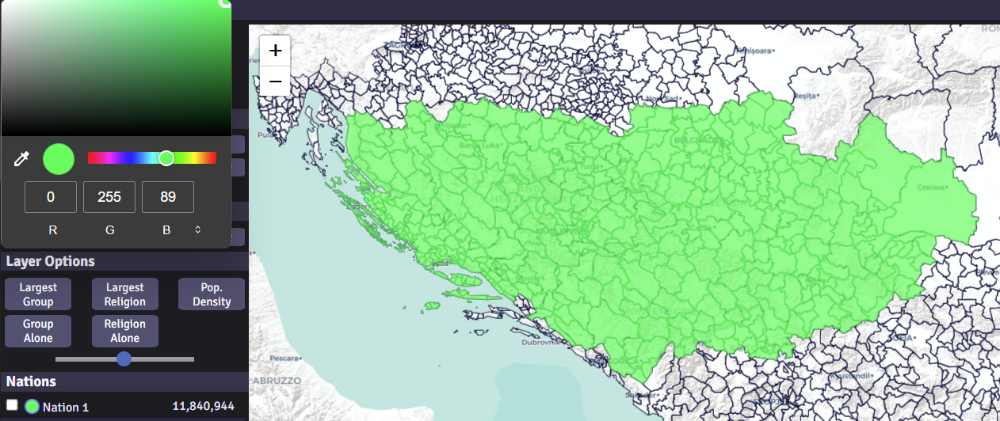
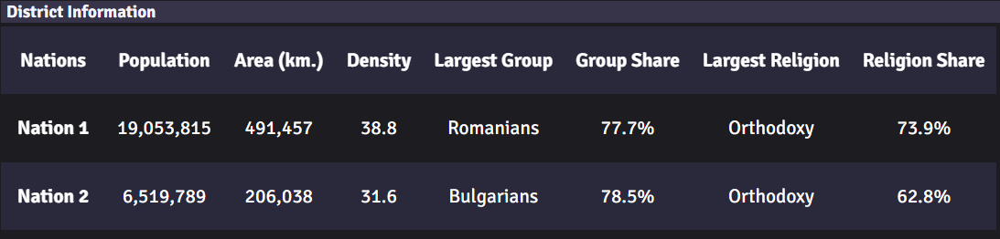
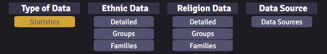
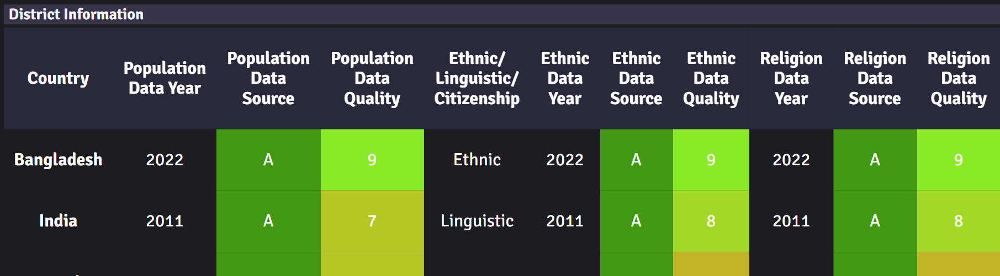
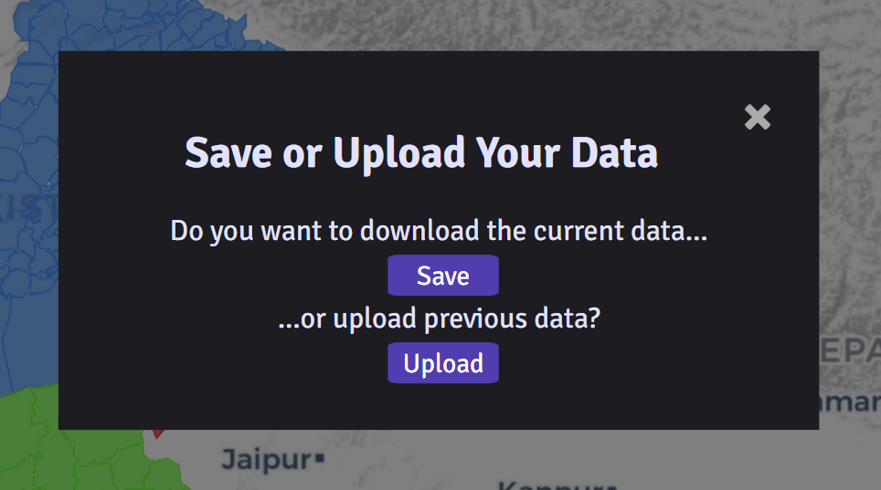

How to use Vattan
Click on the Map button in the navigation bar to begin.
Select a region you would like load from the menu.
Map Tab
Simply click on a district to add it to the nation selected.
If you made a mistake, click on the erase button or the Control key on your keyboard.
To switch back to draw mode, click the draw button or the Shift key on your keyboard.
Select province or country to draw or erase by province and country.
Click the district, province, and country layers to show the borders.
Control the opacity of all selected district through the scale in Map Options.
Click on the other layer options to show other demographic information, such as:
- largest ethno-linguistic group
- largest religious group, population density, and more.
- population density, and more.
Only one non-administrative border layer can be selected at a time.
Control the opacity of the layer through the scale in Layer Options.
To customize the map, rename any districts in the nations list by clicking on the name.
To change the nations color, right click on the circle and select a color.

Data Tab
Click on the data tab to see nation information.
The Statistics button shows general information of all nations, such as area, density, population, largest group, largest religion, etc.
The Ethnic Data and Religion Data sections have three parts: Detailed, Groups, and Families.
Clicking on Detailed provides the most detailed information there is, such as Kyrgyz and Kazakhs.
Clicking on Groups combines similar groups into one, such as Sunni Arabs and Shia Arabs into on Arabs category.
Clicking on Families aggregates on a macro level, such as Turkic, Iranic, and Slavic.
Note: Currently the Ethnic Data and Religion Data tabs do not update automatically, so the user has to manually switch to another tab and back to update it.
Note: Just because a district is shown to have 0 of a certain group doesn't mean there isn't anyone from that group in that district. They may be included in the Others section of the district or, due to data inaccuracy, not tabulated.
To check out the sources and data accuracy of the data, click on the Data Sources button. This tab lists the sources of the data and our ratings on how accurate the information is.
Note: This section lists based on data source, not by country. Breakaway regions, like Abkhazia, Kosovo, and Northern Cyprus, collect data seperately and so are listed seperately.
Note: Since every nation tabulates data differently and the data comes from the best available source [sometimes non-government sources], the data should not be taken as 100% accurate but instead as an estimate based on the best available source.
Save Tab
To save your work and come back later, click on the save tab to download the map information.
When you are ready to return to your map, click on upload and select the previously saved file.
This will result in a map combining all selected districts with the uploaded map, with the uploaded map being the priority.
